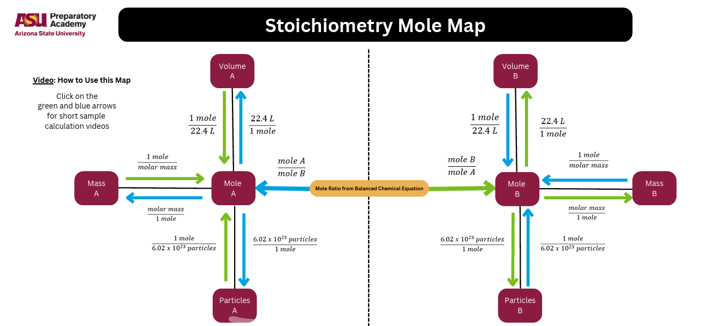

1) Choose your starting point and your target
This tool reveals stoichiometry in three moves: convert → ratio → convert.
2) Mole Map (reference)
Tip: If you get stuck, focus on one goal at a time: “Do I have moles yet?”

What students should remember
- Convert to moles if you aren’t already in moles.
- Mole ratio always comes from the balanced equation coefficients.
- Convert out to the unit asked for (grams, particles, liters).